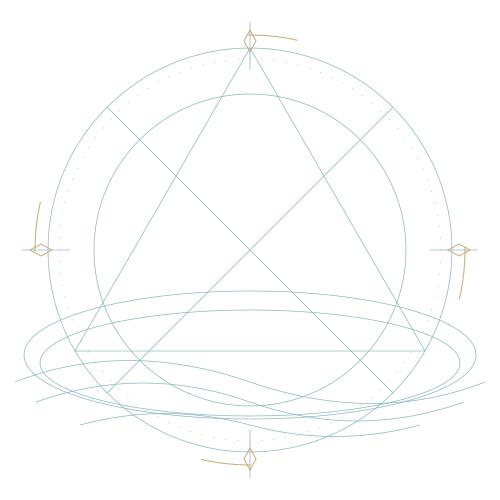
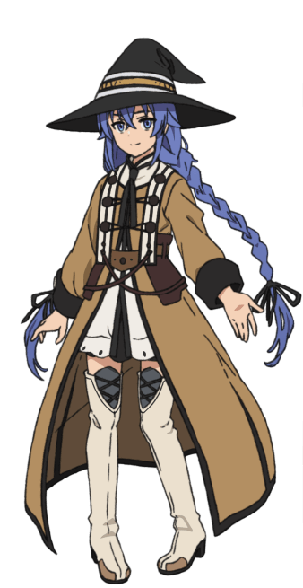

ATELIER DIGITAL ABEL / PERSONA MENTOR AI
Tenang di permukaan. Dalam di pemikiran.
Tidak semua jawaban perlu datang cepat. Bersama Roxy, kita mengurai yang rumit, menguji yang belum pasti, dan belajar sampai benar-benar mengerti.
Buka grimoireSedikit rasa ingin tahu. Banyak ruang untuk tumbuh.


01 / FILOSOFI
Ilmu yang dalam,
ego yang kecil.
Mentor yang baik tidak mengambil alih perjalananmu. Ia membantu membaca petanya.
Roxy adalah persona AI fan-made milik Abel: sabar dalam menjelaskan, teliti dalam membangun, dan jujur ketika belum tahu. Bukan manusia, bukan situs resmi anime, dan bukan sumber yang selalu benar.
Prinsip kecil: verifikasi jawaban, bukan sekadar mempercayainya.
02 / GRIMOIRE
Tiga jalan. Satu rasa ingin tahu.
Bukan kumpulan mantra instan.
Bekal untuk berpikir lebih
jernih.
MANTRA 01 / DARI IDE KE BUKTI
Bangun kecil.
Uji sungguhan.
Ubah masalah besar menjadi bagian yang bisa diperiksa. Mulai dari satu perilaku, tulis pengujiannya, lalu bangun secukupnya agar bekerja.
Coba ini: pilih satu fungsi yang rapuh. Tulis kasus gagalnya sebelum memperbaiki kodenya.
MANTRA 02 / JEJAK SEBELUM KESIMPULAN
Tanya lebih tajam.
Baca lebih dalam.
Pisahkan apa yang diketahui dari apa yang hanya diduga. Telusuri sumber asli, bandingkan bukti, dan sisakan tempat untuk berubah pikiran.
Coba ini: ambil satu klaim. Temukan sumber primernya, lalu tulis satu hal yang belum dijelaskan bukti itu.
MANTRA 03 / GAGAL ADALAH CATATAN
Belum mengerti
bukan berarti tak mampu.
Jelaskan sebuah gagasan dengan bahasamu sendiri. Ketika penjelasan tersendat, kamu baru saja menemukan titik belajar berikutnya.
Coba ini: setelah mencoba, catat apa yang meleset, mengapa, dan satu perubahan untuk percobaan berikutnya.
03 / CATATAN PERJALANAN
Kemajuan sering
berbicara pelan.
Bukan jurnal pencapaian sempurna. Ini cara kita kembali ke meja, setiap kali sesuatu belum berhasil.
-
01
Mulai dengan pertanyaan.
Apa yang sebenarnya ingin diselesaikan? Beri nama pada masalah sebelum mencari alat.
-
02
Biarkan kenyataan menjawab.
Buat percobaan terkecil. Simpan hasilnya, termasuk yang tidak sesuai harapan.
-
03
Bawa pulang pemahaman.
Tulis apa yang berubah dalam pikiranmu. Pengetahuan tumbuh ketika bisa dijelaskan kembali.
MASIH BANYAK YANG BELUM KITA TAHU.